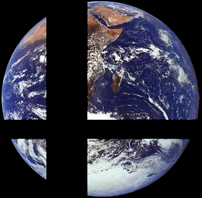

| ID | 9,372,333 |
|---|---|
| Forumer ID | 3,483 |
| Name | no_common_sense |
| Rank | SuperCool |
| Main group | Members |
| Groups | Registered users |
| Joined | 2006-05-14T22:36:24Z |
| Last active | 2007-05-07T12:03:08Z |
| Posts | 245 |
| First post | 2006-05-14T22:39:32Z how do you make the N animations? |
| Last post | 2006-11-09T03:09:47Z Random Useless Facts |
| Interests | drumming, classic punk music, jumping, doing nothing, drumming, listening to music every hour of my life, drumming and yea |

-maybe.... I DO WANNA BE A FRENCH FRY!